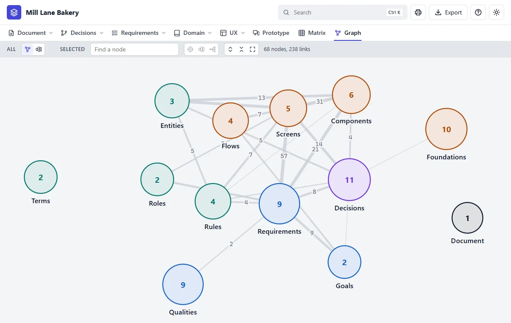
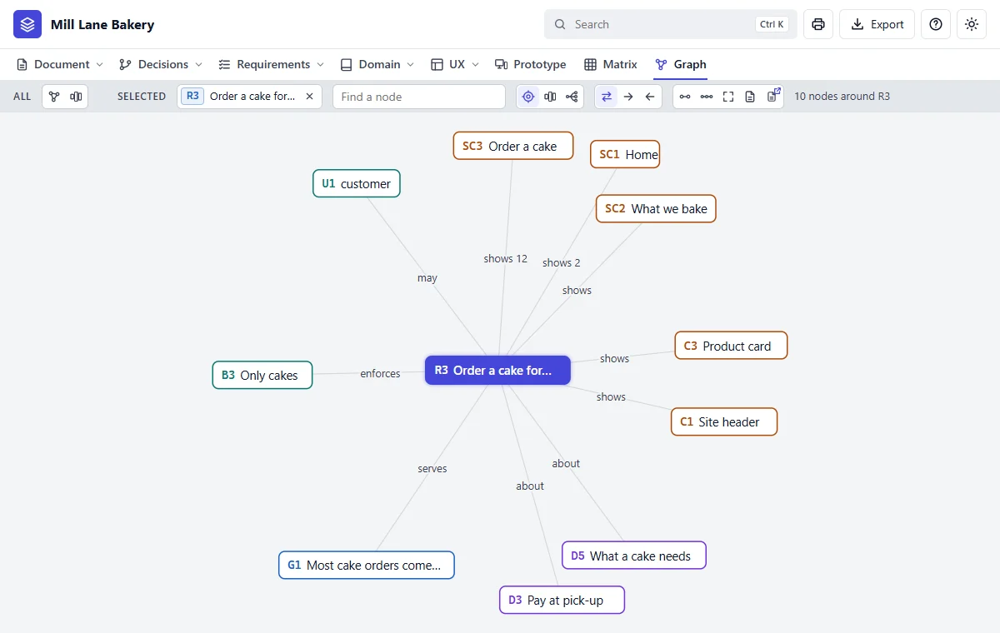
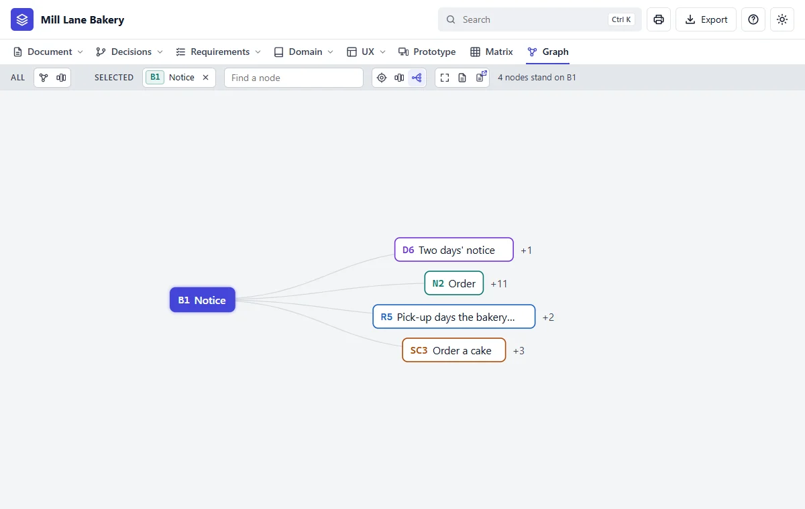
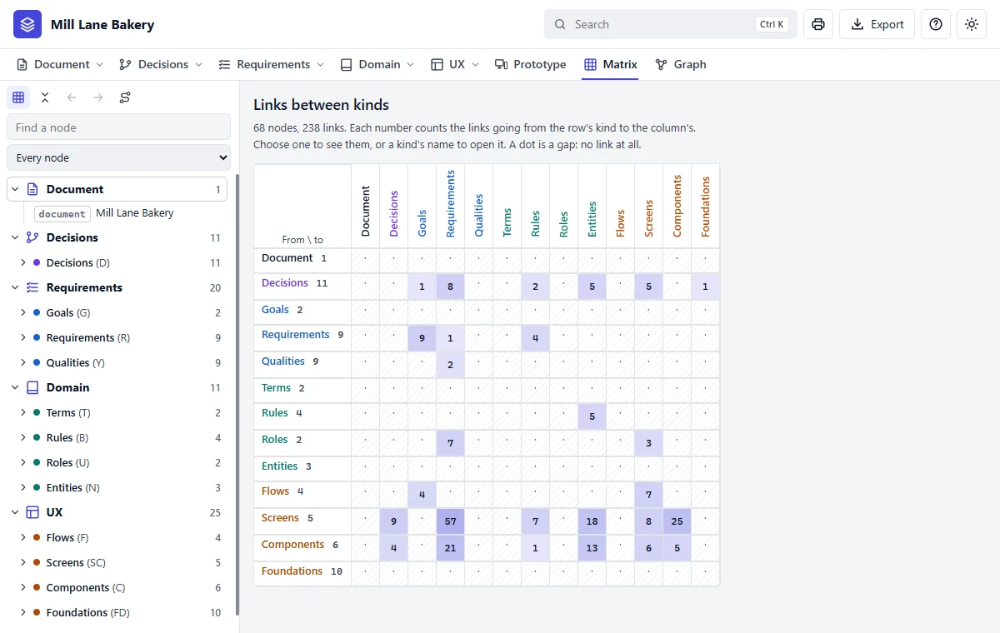
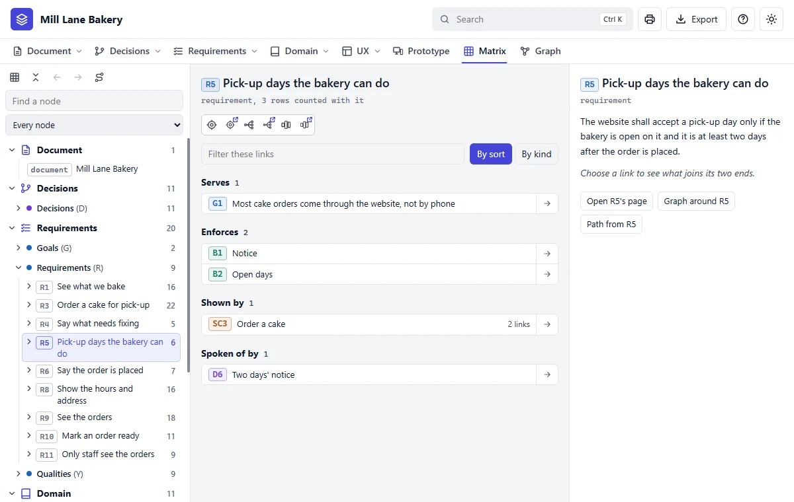

Step 15 of 20 · See what you got
The Graph and the Matrix
The Graph
Click Graph in the bar. This is the string board: each bubble is a kind of fact, and the lines show how many links join them.

Now select a node. In the Find a node box, type R3 and press Enter, then choose Around:

Choose Impact to ask what depends on something. Here's the rule about notice:

The Matrix
Click Matrix. It's the same links as a table, for when you need to be exact.


| To find out | Use |
|---|---|
| How it all fits together | Graph, the map |
| What something is tied to | Graph, Around |
| What a change would reach | Graph, Impact |
| Exactly which links there are | Matrix |